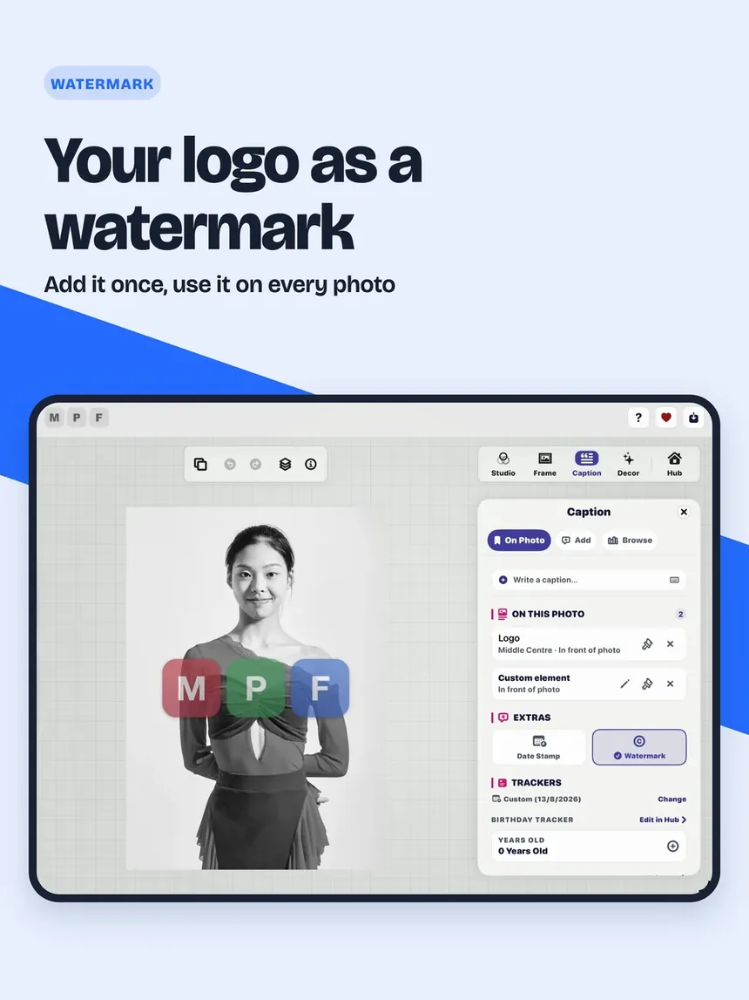

Technology · 06
How the promises get checked.
A business analysis case study. Every feature traces to a written requirement and a test, and anything a Simulator cannot prove is checked on a real device.
By the numbers
One business analyst, from the first commit to the App Store, counted at the build sent to Apple for 3.3.
Show all thirteen figures
Business analysis · Process flow
From a question to the App Store
Every change, large or small, follows the same path. Nothing ships without a written requirement, a green test gate and a check on a real screen.
- 1Question
- 2Look
- 3Decide
- 4Specify
- 5Build
- 6Test
- 7Release
Show the eleven steps and a worked example
- 1
A question or a report
The owner asks for something, a tester reports a problem, or a review finds a gap.
- 2
Look before deciding
The real app is captured on the Simulator, measured, and checked against Apple’s design guidelines. Options are drawn side by side.
- 3
A dated decision
The owner chooses. The decision and the options not taken are written down with the date, so they are not reopened by accident.
- 4
A build specification
Each piece of work becomes a work order with Given, When, Then scenarios, the files it may touch and what it must not change.
- 5
One branch per work order
Work happens in its own branch and folder, never on the main line, so parallel work cannot collide.
- 6
A requirement with acceptance criteria
The work order becomes a numbered functional requirement, with Given, When, Then criteria where the behaviour is new, and a test that covers it.
- 7
The test gate
Merging into the main line runs the full unit suite, 3,074 tests at 3.3, one merge at a time. A red gate stops the merge.
- 8
Checked on a screen
The change is verified on the Simulator across screen sizes, and on a real device for what a Simulator cannot show. Every build names itself in its log, so a test result is tied to the exact build.
- 9
Release checklist
Version, build number, privacy wording, store copy and screenshots are signed off item by item. The build number is the commit count, so it names the exact code.
- 10
Submission and a release line
The submitted build is tagged and given its own branch. The main line moves to the next version the same day, so a later rebuild can never pick up new work.
- 11
Fixes start from the release
A bug in the shipped version is fixed on its release line, then carried forward to the main line. The website waits behind its own gate until the App Store shows the new version.
Worked example · September 2026
Question: the editor’s top controls take room from the photo on small screens. Look: the editor was measured on eleven iPhone, iPad and iPhone Duo shapes with all nine presets, and four rebuilds of the bottom bar and five menu models were drawn to scale. Decision: the owner chose Apple’s own tab bar shape for the bottom bar. Specification: thirteen work orders for the bar and for the foldable iPhone, each with its scenarios. Release line: the same week, 3.3 was tagged at its submitted build and the main line moved to 4.0.
Business analysis · Backlog
Epics and stories, release by release
Every requirement belongs to an epic, and every epic to the release that shipped it. Most carry formal Given, When, Then acceptance criteria; the rest are change records with the request, the fix and the test that covers it.
The rebuild: one text system, 3D Pop and rendering parity, filters and presets, the Hub, the design system, iCloud Sync and preset sharing. All with acceptance criteria.
ShippedLive Photo and motion export, rotation and the Layers panel, caption styling, White Balance, preset collections, full translation, import speed. Most with acceptance criteria.
ShippedPrint and paper, Shot Data and Film, your logo as the watermark, the iPad landscape editor, export quality, the menu design system, accessibility and placement. 313 with formal acceptance criteria.
ShippedShort menus, the start list, the bottom bar and the foldable iPhone, collage, and the polish once planned for 3.4.
Planned; requirements are numbered when each work order is builtRead five 3.3 stories
Five 3.3 stories, as written from their acceptance criteria
Each story is a plain summary of the requirement it cites. Four of the five carry formal acceptance criteria; the placement story is a change record with the test that covers it.
From strategy to a test
Each feature traces up to the goal it serves and down to the tests that prove it.
Strategic theme
Private intelligent creativityMake advanced photo composition approachable without unnecessary cloud dependency.
Epic
AI-assisted photo compositionUse scene understanding and subject separation to unlock meaningful composition.
Capability
On-device scene understandingDiscover context and reusable foreground structure from an imported photo.
Feature
Subject discovery and persistent mask assetsFind foreground instances and retain recoverable artifacts for editing and export.
User story
As a creator, I want the app to separate a clear subject so I can place content around it.Acceptance criteria and automated/manual evidence make the expected behaviour explicit.
Show four features traced to their evidence
| Epic | Capability | Feature / requirement source | Evidence | Lifecycle |
|---|---|---|---|---|
| AI-assisted composition | Subject separation | Rendering requirements and AI pipeline audit | Mask pipeline tests plus device verification | Implemented |
| 3D Studio & parity | Subject overflow | 3D Pop and rendering requirements | Layout-engine tests and visual verification | Implemented |
| Creative text | Behind-subject caption | Caption requirements and unified text model | Caption/model tests plus canvas verification | Implemented |
| Dependable delivery | WYSIWYG export | Rendering requirements and offset specification | Geometry tests, parity traces and export verification | Implemented |
Measured against SFIA
How the project’s artefacts line up with the industry skills framework for requirements work.
Show the five responsibilities and the evidence for each
Define and manage scope, requirements and priorities
REQM Level 4 expects ownership of these activities for initiatives of medium size and complexity.
Max Photo Frames evidenceProduct domains, roadmap initiatives, Epic/Feature groupings, detailed FRs, non-functional constraints and prioritised implementation task boards establish scope from product intent through delivery.
Contribute to selecting the requirements approach
The practitioner helps choose an approach appropriate to the context rather than applying one method mechanically.
Max Photo Frames evidenceLean value-stream analysis explains outcomes, SAFe-aligned hierarchy connects strategy to capability, and Agile stories, acceptance criteria and tests govern incremental delivery.
Facilitate stakeholder input and constructive challenge
REQM Level 4 includes enabling effective input, testing assumptions and supporting prioritisation.
Max Photo Frames evidenceOwner decisions are recorded in roadmap plans, alternatives and rejected approaches remain visible, decision points precede implementation, and requirements are revised when product review changes direction.
Establish a baseline or backlog and obtain agreement
Requirements should have an agreed reference point from which controlled delivery and change can proceed.
Max Photo Frames evidenceThe requirements index, domain shards, Epic view, roadmap, task board and release checklist form the controlled baseline. Proposed work remains visibly separate from implemented behaviour.
Maintain traceability to source
Requirements must remain connected to their origin, delivered behaviour and evidence.
Max Photo Frames evidenceFeatures link to FR numbers, acceptance criteria, related architecture documents, implementation files, automated tests, manual verification and release sign-off. The matrix above summarises that chain.
Enable, guide and work autonomously
The broader SFIA Level 4 responsibility describes diverse complex work under general direction, supporting others and contributing expertise to team outcomes.
Practice alignment, not certification
This page demonstrates how the project’s artefacts align with REQM Level 4. A formal SFIA assessment would also require evidence of the individual’s workplace autonomy, influence, complexity and behaviours.
How the app is built
One editor made of separate parts, each with one job, from the controls you touch to the file you save.
A document-centred product
The editor is one experience built from distinct responsibilities.
Views present the controls, state coordinates intent, the document preserves creative decisions, and dedicated services understand, render and deliver the pixels.

Experience→State & intents→Creative document→Use-case coordination→AI & image pipeline→Layout & rendering→Storage & delivery
Show the seven parts and the technology
Experience
App shell, editor, canvas and inspectors
Present navigation and creative controls while reading state and raising user intent.
State & intents
Reactive coordination
State flows down to the interface; controlled actions flow up through the intent system.
Creative document
Non-destructive project and profile
FrameDocument, FrameProfile, document layers and unified caption elements preserve creative intent.
Use-case coordination
Intake, document and export interactors
Coordinate complete business processes without embedding policy inside views.
AI & image pipeline
Vision, analysis and processing nodes
Understand the scene, refine masks and create scoped image products.
Layout & rendering
Shared geometry, canvas and compositor
Turn one document contract into responsive preview pixels and high-resolution delivery pixels.
Storage & delivery
Settings, document assets and export services
Recover work, persist reusable assets, protect metadata and deliver the finished creation.
SwiftUI and Observation
SwiftUI, iOS 17 Observation with @Observable, a custom staged editor layout, Swift concurrency and a canvas-first interaction model.
Vision and Core Image
Apple Vision foreground masks, Core Image compositing and filters, Photos/PhotosUI integration, skin smoothing and subject cutouts.
Shared preview and export
ExportInteractor, ExportManager, RenderService and layout math stay aligned with the live SwiftUI preview.
Non-destructive documents
Reusable frame profiles, persisted media layers and a V5 document model keep editing flexible while protecting user work.
Selected build history
Development runs on the main line. Each release gets its own line at the exact build sent to Apple, is fixed there, and closes back in when the next version is live.
Show what happened at each step
- 15 Sep 2025
First App Store release
Max Photo Frames launches on iPhone and iPad with its first photo-framing experience.
v1.06 commits - 30 Jan 2026
Smarter date handling
Photos with unknown dates gain safer fallbacks and smarter caption behaviour.
v2.8.0132 commits - 31 Jul 2026
A complete rebuild
Version 3.0: a new document model, one text system and a shared preview and export path.
v3.0.02,000 commits - 1 Aug 2026
Version 3.0 approved; its release line opens
Fixes for the shipped version now start from their own branch. On the main line, automated comparison work keeps the live preview and the saved image aligned.
release/v3.0 - 2 Aug 2026
Hotfix 3.0.1, and full backup returns
A fix ships from the release line as 3.0.1 and is carried forward. On the main line, backup returns to the Hub with the saved caption library.
v3.0.1 - 14 Aug 2026
Reliable iCloud Sync
A full two-device test cycle hardens iCloud Sync and ensures an empty cloud answer can never delete a library.
- 15 Aug 2026
Version 3.1 submitted
The release notes, device verification and App Store materials come together, and 3.1 gets its own release line.
v3.1.02,898 commitsrelease/v3.1 - 18 Aug 2026
3.1 approved; one renderer for every export
The 3.0 line closes into the main line. Live Photo, GIF and video exports move onto the same rendering path as the saved photo, and projects open without stalling.
release/v3.0 closed - 25 Aug 2026
Version 3.2 submitted
Presets gain groups you can name and search, captions and props answer to a touch and hold, and a 57-step device pass is completed on iPhone and iPad.
v3.2.03,664 commitsrelease/v3.2website-v3.2 - 28 Aug 2026
3.2 approved and live
The 3.1 line closes into the main line, 3.2 becomes the live line, and the main line opens 3.3.
release/v3.1 closed - 24 Sep 2026
Version 3.3 submitted
Print sizes, your own logo as the watermark and camera settings as a caption are checked step by step on iPhone and iPad before 3.3 goes to Apple. Its release line is cut at the exact build sent, and the main line moves to 4.0.
v3.3.0build 5,777release/v3.3website-v3.3 - Next
Version 4.0, in development
Short menus, a new bottom bar, the foldable iPhone and collage, on the main line while 3.2 and 3.3 stay on their own lines.
4.0.0
Repository snapshot: 3,488 first-parent commits on main, 5,781 commits across local refs, and 23 release or milestone tags. Commit count describes repository activity, not hours worked.